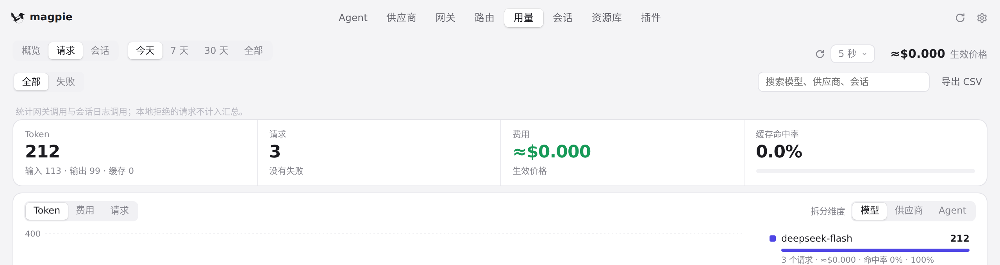
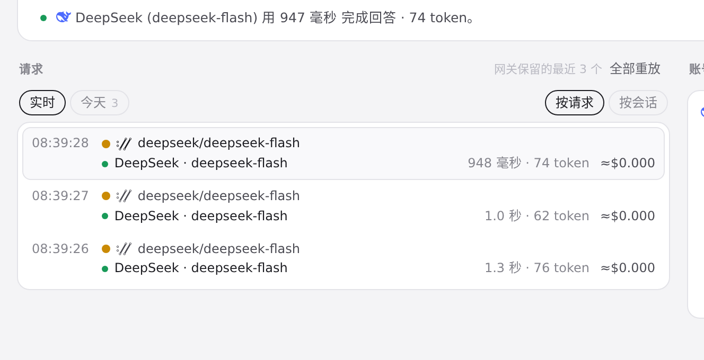

#771 界面预览
commit 22575ab · 回到 PR · 用量「请求」标签和路由页的筛选行各多出一个「调用用途」下拉：同义的 kind 合并成一项、未知 kind 保留原名、没有 kind 的记录显示为「未标记」，选中后过滤请求列表（用量端还作用于合计、图表与 CSV 导出）；路由页筛选行改为可换行，窄窗口下也能放下。
红线是鼠标走过的轨迹，红色圆环是一次点击；底部文字是这一步在做什么。空格暂停，← → 逐段查看。
 用量：按调用用途筛选请求 · 请求列表上方的筛选行
用量：按调用用途筛选请求 · 请求列表上方的筛选行

用量：按调用用途筛选请求 · 请求列表上方的筛选栏（本沙盒的调用都没有记录用途）
路由：按调用用途筛选请求 · 路由页请求列表的筛选行

路由：按调用用途筛选请求 · 路由页筛选行下方的请求列表